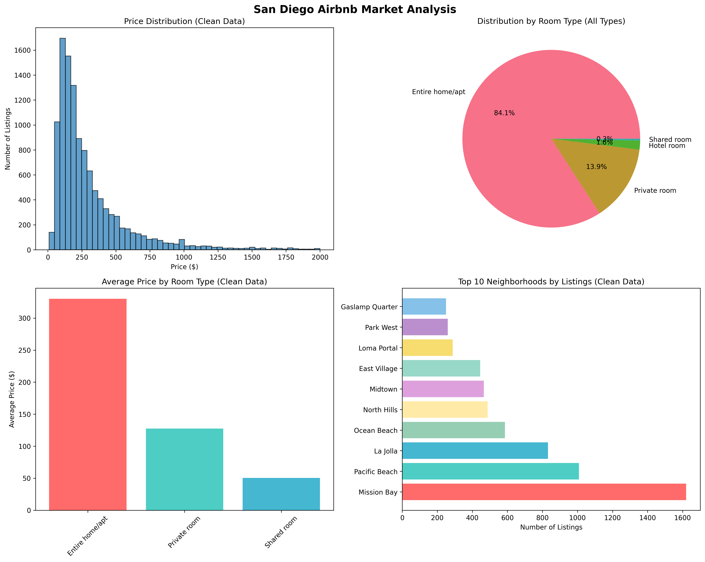
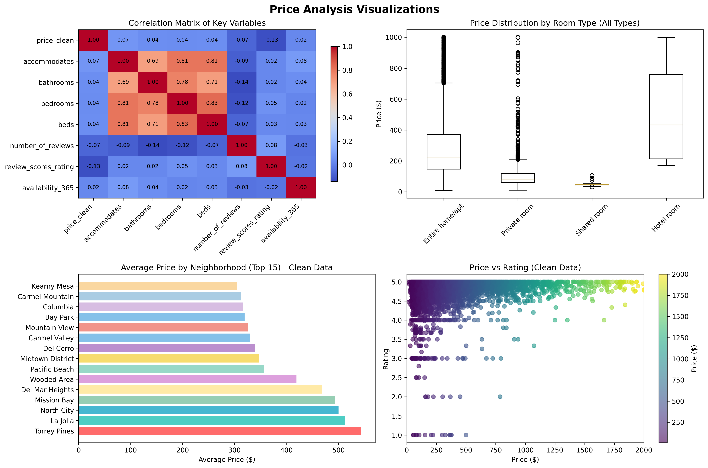
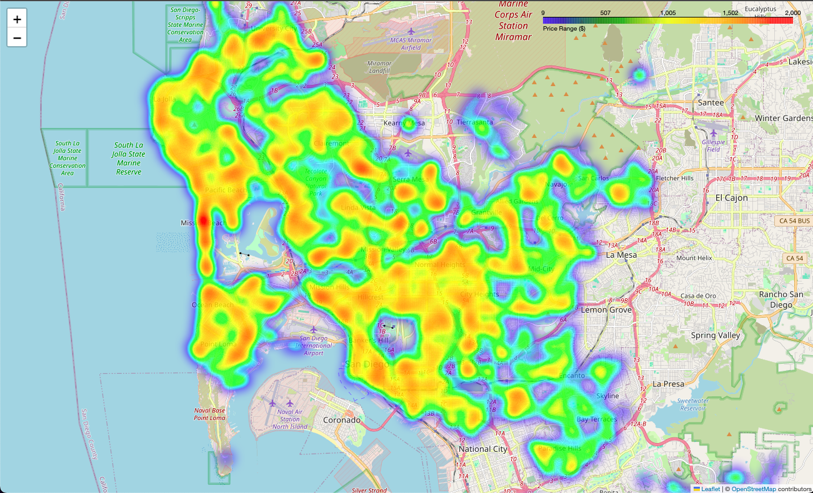
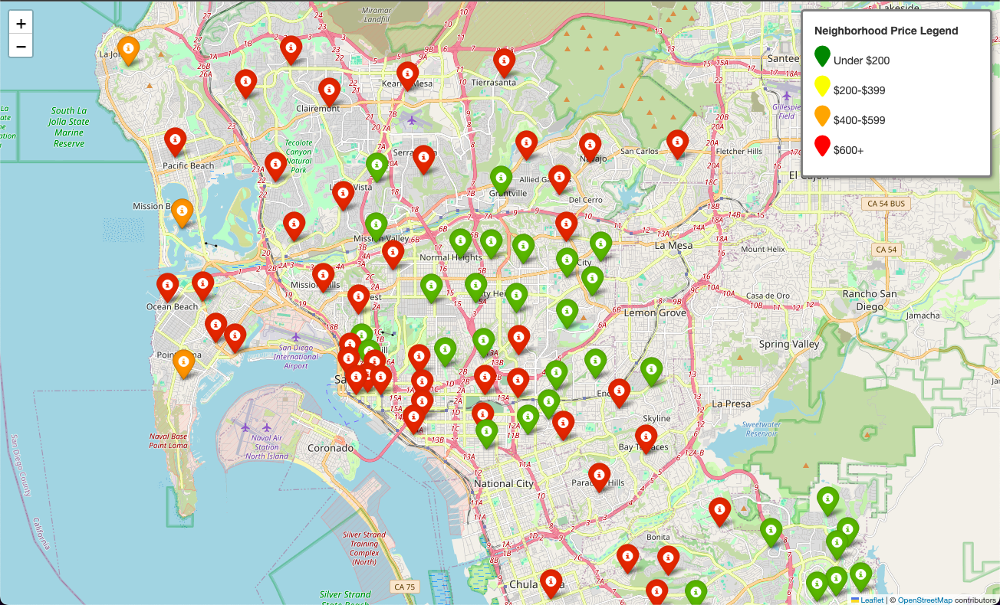

Project Overview
A comprehensive data analysis project examining the San Diego Airbnb market — combining an auditable preprocessing pipeline, predictive modeling, static reports, and a Streamlit dashboard for interactive exploration. Built around the philosophy that data analytics is 80% data cleaning, the project is intentionally explicit about every row dropped or imputed so a reviewer can audit the methodology end-to-end.
Technologies Used
Python
Pandas
NumPy
scikit-learn
Streamlit
Matplotlib
Seaborn
Folium
Key Insights
10,720
Clean Listings (from 12,959 raw)
$197
Median Nightly Price
Features
- Auditable Preprocessing Pipeline: Explicit, parameterized cleaning (
iqr_multiplier, rare_property_threshold) that returns both a cleaned DataFrame and a step-by-step report dict
- Per-Neighborhood IQR Outlier Filtering: Outliers are computed within each neighborhood, not globally — a $1,200/night listing is an outlier in North Hills but normal in La Jolla, and the global filter would miss that
- Property-Type-Aware Imputation: Missing bedroom/bathroom counts are filled from the median of the listing's property type, not the global median across treehouses and yachts
- Streamlit Interactive Dashboard: Multiselect filters across 101 neighborhoods, price/room-type/bedroom sliders, live-recomputing KPIs, and an embedded geo map
- Predictive Modeling: Random Forest regression with feature importance analysis, evaluated on a 1,000-row held-out test set
- Interactive Maps: Folium-based price heatmaps and clickable neighborhood markers
- Shared Source of Truth: Both the batch pipeline and the dashboard call the same
preprocess() function — no drift between report numbers and dashboard numbers
Cleaning Methodology
The pipeline (src/preprocessing.py) emits a step-by-step report on every run so reviewers can see exactly what was dropped or imputed:
rows_raw 12,959
dropped_missing_critical 1,355
rows_after_imputation 11,604
dropped_price_outliers 884
property_types_collapsed_to_other 39
rows_final 10,720
Three deliberate design choices:
- Drop vs. impute, per field. Load-bearing fields (
price, neighbourhood_cleansed, latitude, longitude, room_type) are dropped if missing — we refuse to fabricate them. Structural fields (bedrooms, beds, bathrooms) are imputed from the property-type median, falling back to the global median only when a property type has no observations. Review scores are imputed with the column median because they are legitimately blank for brand-new listings.
- Per-neighborhood IQR for outliers. A single $50M La Jolla mansion will drag both La Jolla's mean and the city-wide mean upward. Computing Q1/Q3 within each neighborhood preserves La Jolla's legitimate high-end inventory while still catching obvious data errors in cheaper neighborhoods. ~7% of listings were filtered this way; the multiplier is parameterized so reviewers can loosen it.
- Collapse rare property types. 39 categories with fewer than 50 listings each (Tipi, Yurt, etc.) are bucketed into
"Other" so dashboards and category filters stay readable.
Interactive Dashboard (Streamlit)
Static charts work for a one-shot report, but stakeholders usually want to filter the data themselves. src/dashboard.py wraps the same cleaning pipeline in a Streamlit app:
- Multiselect across 101 distinct neighborhoods (more usable than a slider for unordered categoricals)
- Nightly price range slider, room type filter, minimum bedrooms filter
- Live KPIs — listing count, median price, mean price, average review score — that recompute as filters change
- Median price by neighborhood bar chart, price distribution histogram, and a geographic map of the filtered listings
▶ Open the live dashboard →
or run locally:
$ streamlit run src/dashboard.py # then open http://localhost:8501
Top Neighborhoods
- Mission Bay: 1,542 listings, Avg: $438/night
- Pacific Beach: 959 listings, Avg: $313/night
- La Jolla: 803 listings, Avg: $469/night
- Ocean Beach: 540 listings, Avg: $232/night
- North Hills: 463 listings, Avg: $171/night
Entire homes/apartments make up 86.3% of the cleaned dataset; private rooms account for the remaining ~13%.
Visualizations

Price distribution, correlation, and trend analysis

Geographic price distribution across San Diego

Interactive neighborhood markers with details
Model Performance
- Basic Model: MAE $87.50, R² 0.674
- Full Model: MAE $85.28, R² 0.688
- Accuracy within $20: 29.5%
- Top Features: bedrooms, bathrooms, availability_365
Business Recommendations
- Target entire homes/apartments for maximum revenue potential
- Price competitively ($200-400 range) to drive bookings and reviews
- Focus on properties that accommodate 4+ guests
- Consider year-round availability for premium pricing
- Target neighborhoods with high ratings but moderate prices